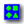

Загрузка файлов
 Описание файлов.
Описание файлов.
Файлы примеров к статьям.
- Создание "горячих клавиш" в Visio 2000 En.
- Методы создания масштабируемых объектов в Visio 2000 En.
- Методы создания градиентных заливок в Visio 2000 En.
- Методы создания 3D в Visio 2000 En.
- Методы создания штампов и вопросы автопозиционирования в Visio 2000 Ru.
RAR,ZIP
- Как создать будильник? Методы создания интерактивных объектов в Visio 2000 Ru, Visio 2002, Visio 2003.
RAR,ZIP
- Методы создания шаблонов линий в Visio 2000 Ru, Visio 2002, Visio 2003. RAR,ZIP
- Методы создания градиентных заливок линий в Visio 2000 Ru, Visio 2002, Visio 2003.RAR,ZIP
- Методы и способы создания интерактивной прозрачности в Visio 2002, Visio 2003. RAR,ZIP
- Методы создания растровой прозрачности векторных фигур в Visio 2002 Ru. RAR,ZIP
- Формирование фигур в Visio 2000 Ru и Visio 2002 Ru.
- Типы соединительных точек в Visio 2000 Ru и Visio 2002 Ru.
- Способы оптимизации фигур в Visio.
- Методы повышения визуального восприятия структурных схем в Visio.
- Способы оптимизации линий в Visio.
- Создание мультифигур в Visio.RAR,ZIP
- Поэтапное создание в Visio примера из раздела "Работы".
- Способы выделения фигур в Visio 2000, Visio 2002.
- Особенности графического представления фигур в Visio.
- Методы создания шаблонов концов линий в Visio 2000 Ru, Visio 2002 Ru, Visio 2003.RAR,ZIP
- Вопросы стабильности и испорченные файлы в Visio 2003.
- Мебель своими руками в Visio 2003.RAR,ZIP
- Растровые мультифигуры в Visio.RAR,ZIP
Цветовые схемы для Microsoft Visio всех версий.
- Цветовая схема из документации Microsoft Visio 2000 DVS.
- Стандартная цветовая схема из Microsoft Visio 2000.
- Стандартная цветовая схема из Microsoft Visio 2002.
- Стандартная цветовая схема из Microsoft Office Visio 2003.
- Моя текущая цветовая схема для Microsoft Visio.
В ней есть несколько отличий по сравнению со стандартной цветовой схемой Microsoft Office Visio 2003. Несколько изменен задний фон, т.к. он вроде градиентный, так пусть глаз радует. Чуть более темной сделан рабочий цвет листа, чтобы можно было различать фигуры с белой заливкой.
Трафареты для Visio.
- Стаднартные значки Cisco.
- Небольшое количество продукции Cisco.
Также в разделе Избранное собраны многочисленные ссылки на ресурсы и трафареты.
В начало сайта
Автор: Ничков Алексей (a.k.a. Digitall)